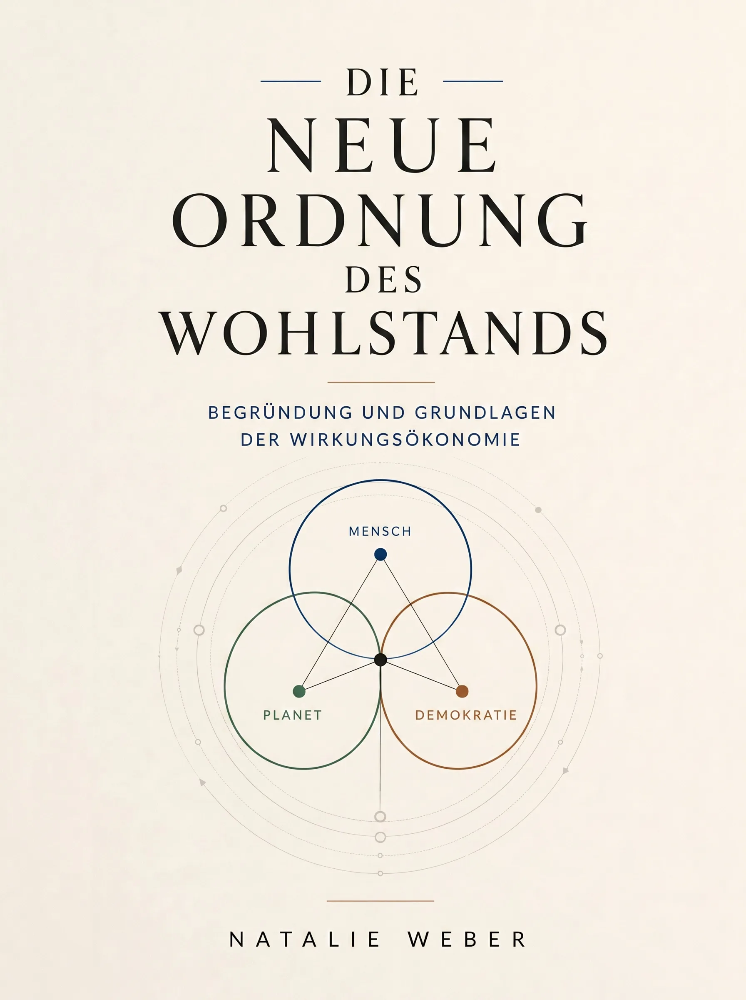

Wirkungsökonomie
Wirkungsökonomie
Wirkungsökonomie
Wirkungsökonomie
Physikerin · Autorin · Begründerin
Physikerin, Nachhaltigkeitsstrategin, Autorin, Musikerin und Begründerin der Wirkungsökonomie. Sie entwickelt mit den Wirkungswissenschaften einen Rahmen, in dem Wirkung als tatsächliche Veränderung von Zuständen sichtbar, bewertbar und entscheidungsrelevant wird - für Mensch, Planet und Demokratie.
01 · Kurzprofil
Natalie Weber verbindet naturwissenschaftliches Denken, Nachhaltigkeitsmanagement, Systemanalyse und öffentliche Vermittlung. Aus der Frage, warum Gesellschaften so viel messen und trotzdem oft nach den falschen Maßstäben steuern, entwickelte sie die Wirkungsökonomie.
Fachlicher Ursprung
Physik und Systemdenken
Praxisfeld
Nachhaltigkeitsmanagement und Unternehmensrealität
Zentrale Arbeit
Wirkungsökonomie, Wirkungswissenschaften, Institut, Akademie
Vermittlung
Buch, Journal, Podcast, Musik
Persönlich
Mutter von drei Söhnen
02 · Ursprung
Die Wirkungsökonomie entstand aus einem Widerspruch: Unternehmen, Märkte und politische Systeme erzeugen immer mehr Daten, Berichte und Kennzahlen. Trotzdem bleibt oft offen, was sich dadurch wirklich verändert.
Aus Physik, Systemdenken und Nachhaltigkeit wurde bei Natalie Weber eine ökonomische und demokratische Frage: Wie muss eine Gesellschaft steuern, wenn nicht Kapital, sondern Wirkung der entscheidende Maßstab ist? Ihre Arbeit macht Wirkung zum Maßstab - als reale Zustandsveränderung für Mensch, Planet und Demokratie.
03 · Wirkungsräume
Natalie Webers Arbeit besteht nicht nur aus einem Begriff oder einem Buch. Sie hat einen zusammenhängenden Wirkungsraum aufgebaut: Modell, Wissenschaftsrahmen, Forschungsraum, Lernraum und öffentliche Vermittlung.
Macht Wirkung zum Maßstab für Wirtschaft, Politik, Kapital, Medien und gesellschaftliche Entwicklung.
Modell verstehen → Wissenschaftlicher RahmenRahmen Wirkung als tatsächliche Veränderung von Zuständen und verbinden Forschung, Bewertung und Rückkopplung.
Rahmen verstehen → Methodische WeiterentwicklungBestehende Wirkungsforschung wird nicht negiert, sondern erweitert: von nachgelagerter Evaluation zu voraus-, begleit- und rückkoppelnder Forschung.
Einordnung lesen → Forschungs- und ArbeitsraumEntwickelt Wirkungswissen durch Fragen, Quellenarbeit, Analysen, Review, Dossiers und Rückkopplung.
Institut öffnen → Lern- und BildungsraumÜbersetzt die Wirkungsökonomie in Wirkungskompetenz - mit Lernpfaden, Kursen, Prüfungen und Praxisprojekt.
Akademie starten →04 · Autorin
Natalie Weber schreibt an einer Sprache für Wirkung: präzise genug für Forschung und Steuerung, verständlich genug für Öffentlichkeit und Praxis.

Ihr Grundlagenwerk Die neue Ordnung des Wohlstands entfaltet die Wirkungsökonomie als Modell für eine Gesellschaft, die Wirkung auf Mensch, Planet und Demokratie zum Maßstab macht. Dazu kommen Dossier, Journalbeitrag und das Glossar der Wirkungsökonomie.
05 · Vermittlung
Die Wirkungsökonomie soll nicht nur als Theorie existieren. Sie soll verstanden, geprüft, diskutiert und angewendet werden - deshalb arbeitet Natalie Weber in verschiedenen Formen der Vermittlung.
„Der neue Kompass“ erklärt Wirkung, Preise, Kapital, Demokratie und Verantwortung Schritt für Schritt - mit Transkripten.
Podcast →Als Musikerin (sustynats) zeigt Natalie Weber eine andere Seite derselben Grundfrage: Was berührt, was verändert, was bleibt?
Musik →In sozialen Medien macht sie komplexe Wirkungsfragen zugänglich und diskutierbar.
LinkedIn →06 · Persönlich
Neben ihrer fachlichen Arbeit ist Natalie Weber Musikerin und Mutter von drei Söhnen.
Diese persönliche Perspektive gehört nicht als private Anekdote auf die Seite, sondern als Teil ihres Blicks auf Wirkung: Es geht um Zukunft, Verantwortung, Care, Bildung, Vertrauen und die Frage, welche Bedingungen kommende Generationen vorfinden.
07 · Einordnung
Wirkung wurde auch vor Natalie Weber untersucht. Neu ist der systemische Rahmen, in dem Wirkung als gemeinsame Leitkategorie von Erkenntnis, Bewertung und Steuerung zusammengeführt wird.
Natalie Weber beansprucht nicht, dass vor ihr niemand Wirkung untersucht hätte. Ihr Beitrag liegt in der systemischen Verbindung: Wirkung wird als tatsächliche Veränderung von Zuständen verstanden, am Rahmen Mensch, Planet und Demokratie bewertet und in Entscheidungen, Preise, Kapital, Recht, Medien und Governance rückgekoppelt. Die Wirkungswissenschaften sind kein staatlich oder akademisch bereits anerkanntes Fach, sondern ein in Entwicklung befindlicher Rahmen.
08 · Öffentliche Kommunikation
Natalie Weber konzentriert sich bewusst auf Grundlagenarbeit, Autorinnenschaft und die Weiterentwicklung der Wirkungsökonomie. Die Wirkungsökonomie soll nicht über eine einzelne Person skaliert werden, sondern über Institutionen, Materialien, Schulungen und qualifizierte Multiplikator:innen.
Ihr Schwerpunkt liegt auf Theorieentwicklung, systemischer Einordnung, Texten, Konzepten, Methodik, Akademie und der Befähigung von Multiplikator:innen. Öffentliche Anfragen, Fachgespräche und Schulungsformate werden daher institutionell über das Wirkungsinstitut, die Akademie oder autorisierte Ansprechpartner:innen koordiniert.
09 · Presse & Anfragen
Kurzprofile, Hintergrundmaterialien, Zitate zur Verwendung und die passenden Ansprechpartner:innen für Medien, Organisationen und Kooperationen.
Persönlicher Kontakt
Du hast ein konkretes Anliegen? Frage ein 30-minütiges Telefongespräch oder, sofern freigeschaltet, einen Discord-Sprachanruf mit mir an.
Dienstag, Mittwoch und Donnerstag zwischen 10:00 und 12:00 Uhr. Termine sind frühestens eine Woche und höchstens drei Kalendermonate im Voraus anfragbar. Alle Zeiten gelten für Deutschland (Europe/Berlin, mit Sommer-/Winterzeit).
Vom 15. Dezember 2026 bis einschließlich 15. Januar 2027 sind keine Termine möglich.
Deine Anfrage ist noch keine Zusage. Bestätige sie zunächst innerhalb von 72 Stunden: bei Telefonanfragen per E-Mail-Link, bei Discord-Anfragen nach der Discord-Anmeldung mit einem eigenen Bestätigungsschritt. Bis zum Ablauf dieser Frist bleibt dein Termin für dich vorgemerkt. Danach prüfe ich dein Anliegen persönlich und antworte über den gewählten Kontaktweg. Die vorläufige Reservierung gilt anschließend höchstens 72 Stunden; ohne Zusage wird der Termin wieder frei.
Verfügbare Gesprächstermine werden geladen.